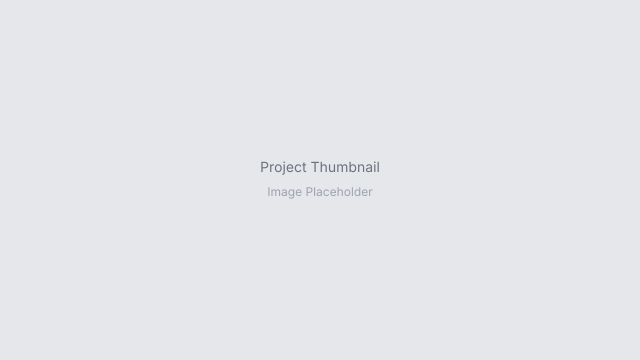

CompletedAI-Powered Document Processing & Visualization
AI-based digitization and evaluation of AP Police Service Records using Qwen2.5-VL and YOLO pipelines.
1st Place
Research projects and technical work across Deep Learning, Medical Imaging, and Computer Vision.

CompletedAI-based digitization and evaluation of AP Police Service Records using Qwen2.5-VL and YOLO pipelines.
 Ongoing
Ongoing
Multi-human referring expression grounding with 95K+ images and token-level text-visual alignment.
 Completed
Completed
Instruction-conditioned pathology segmentation with compositional graph reasoning for histopathology.
 Completed
Completed
AI-assisted echocardiogram analysis for LV segmentation and ejection fraction estimation.
Cross-modal classification fusing chest X-ray images and clinical text using CLIP with custom cross-attention.
Comparative benchmark of UNet, Attention UNet, TransUNet, U²-Net, and DuckNet for clinical thyroid detection.
Latent-space knowledge transfer analysis with Stable Diffusion XL using BLoRA integration.